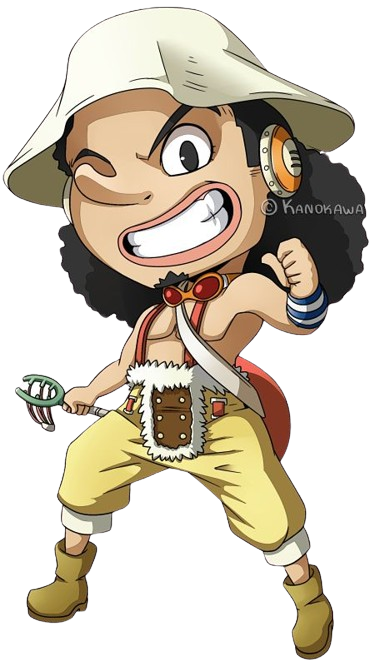

Luffy is usually recognizable by his straw hat, a gift from "Red-Haired" Shanks. In his early childhood, he wears a white shirt and blue shorts. The character has a scar under his left eye from stabbing himself to demonstrate his courage to Shanks and his crew.

Nami is a slim young woman of average height with orange hair and brown eyes. Many characters seem to consider her to be an attractive woman.



"God" Usopp is the sniper of the Straw Hat Pirates and one of the Senior Officers of the Straw Hat Grand Fleet. He is the fourth member of the crew and the third to join, doing so at the end of the Syrup Village Arc. Although he left the crew during the Water 7 Arc, he rejoined at the end of the Post-Enies Lobby Arc.
Sanji is a tall, slender man who commonly wears a black suit and smokes a cigarette. Before the timeskip, Sanji is seen with his blonde hair covering his left eye. However, after the timeskip, his hair covers his right eye.
Zoro is a relatively tall man with a muscular physique and light tanned skin. He has his distinctive spiky green hair, which Sanji ridicules him for by calling him "Moss Head". He has a stitched scar on his chest which he got from his first duel with Dracule Mihawk.